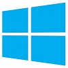

About Windows
Microsoft Windows is a series of graphical interface operating systems developed, marketed, and sold by Microsoft.
Microsoft introduced an operating environment named Windows on November 20, 1985 as a graphical operating system shell for MS-DOS in response to the growing interest in graphical user interfaces (GUI).
Microsoft Windows came to dominate the world's personal computer market with over 90% market share, overtaking Mac OS, which had been introduced in 1984.
As of October 2013, the most recent versions of Windows for personal computers, mobile devices, server computers and embedded devices are respectively Windows 8.1, Windows Phone 8, Windows Server 2012 R2 and Windows Embedded 8.